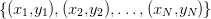
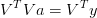
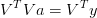
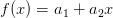
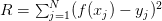
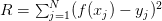
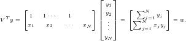
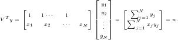

7.1 Ajuste de uma reta
Nesta seção, discutiremos o procedimento de ajuste de uma reta a um conjunto de pontos dados. Em outras palavras, discutiremos o método de solução para o problema de encontrar o polinômio do primeiro grau que melhor se aproxima a um dado conjunto de pontos pelo método dos mínimos quadrados.
Seja, então,  um conjunto de  pontosdados.
Buscamos encontrar a função
pontosdados.
Buscamos encontrar a função  tal que o resíduo
tal que o resíduo
|
|
seja mínimo.
Para tal, primeiro observamos que  e, portanto, o resíduo
pode ser escrito explicitamente como uma função de
e, portanto, o resíduo
pode ser escrito explicitamente como uma função de  e
e  conforme a
seguinte expressão:
conforme a
seguinte expressão:
|
|
Observamos que  é uma forma quadrática e que seu mínimo
ocorre quando suas derivadas parciais primeiras são iguais a zero, isto é
é uma forma quadrática e que seu mínimo
ocorre quando suas derivadas parciais primeiras são iguais a zero, isto é


 , o sistema linear acima pode ser escrito na forma
matricial
, o sistema linear acima pode ser escrito na forma
matricial  , i.e.,
, i.e.,
 | (7.1) |
Este sistema linear de duas equações e duas incógnitas admite uma única solução quando o determinante da matriz dos coeficientes for não nulo, isto é

Pode-se mostrar usando a desigualdade de Cauchy–Schwarz que isto
acontece quando existem pelo menos duas abscissas diferentes envolvidas no
ajuste. Usando a fórmula da inversa de uma matriz dois-por-dois, chegamos às
seguintes fórmulas para os coeficientes  e
e  :
:
|
| (7.2) |
Por fim, observamos que o sistema  descrito na equação (7.1) pode
ser reescrito na forma , onde
descrito na equação (7.1) pode
ser reescrito na forma , onde ![V := [1 x]](main2937x.png) é a matriz dos
coeficientes do seguinte sistema linear sobre determinado:
é a matriz dos
coeficientes do seguinte sistema linear sobre determinado:
|
| (7.3) |
Se os pontos dados não são colineares, este sistema não têm solução. Mas, sempre
que pelo menos duas abscissas foram diferentes,  é uma matriz
invertível e (veja o Exercício 7.1.4), então
é uma matriz
invertível e (veja o Exercício 7.1.4), então
 | (7.4) |
nos fornece a chamada solução por mínimos quadrados do sistema (7.3). Note
que esta é uma forma de se obter os coeficientes  equivalente àquela
dada em (7.2).
equivalente àquela
dada em (7.2).
Exemplo 7.1.1. Retornemos ao exemplo 7.0.3. Isto é, dado o conjunto
de pontos  ,
,  ,
,  , encontrar a função do tipo
, encontrar a função do tipo
 que melhor se ajusta os pontos dados no sentido de
mínimos quadrados.
que melhor se ajusta os pontos dados no sentido de
mínimos quadrados.
Solução. Usando as fórmulas em (7.2), obtemos

 corresponde à
reta que melhor ajusta os pontos dados no sentido de mínimos quadrados. Os
pontos e a reta ajustada estão esboçados na Figura 7.1.
corresponde à
reta que melhor ajusta os pontos dados no sentido de mínimos quadrados. Os
pontos e a reta ajustada estão esboçados na Figura 7.1.
Deixamos ao leitor a verificação de que os coeficientes  e
e  também
podem ser obtidos pela expressão (7.4).
também
podem ser obtidos pela expressão (7.4).
Em Python, podemos computar os coeficientes  e
e  da seguinte
forma:
da seguinte
forma:
>>> yi = np.array([1.2,1.3,2.3])
>>> V = np.array([xi**1,xi**0]).transpose();V
array([[ 1. , 1. ],
[ 1.5, 1. ],
[ 2. , 1. ]])
>>> a = ((np.linalg.inv((V.transpose()).dot(V))).dot(V.transpose())).dot(yi);a
array([ 1.1 , -0.05])
Então, o gráfico da função ajustada e dos pontos pode ser obtido com os comandos:
>>> plt.plot(xi,yi,’ro’,xx,np.polyval(a,xx),’b-’)
>>> plt.grid();plt.show()

O procedimento apresentado de ajuste de uma reta por mínimos quadrados pode ser generalizado para qualquer família de funções que seja um espaço vetorial de dimensão finita. Problemas de ajuste com tais famílias de funções é o que chamamos de problemas de ajuste linear, os quais exploramos em detalhe na próxima seção.
Exercícios
E 7.1.1. Sejam dados o conjunto de pontos  ,
,
 ,
,  . Encontre a função
. Encontre a função  que
melhor se ajusta no sentido de mínimos quadrados aos pontos dados. Faça,
então, um gráfico com os pontos e o esboço da função ajustada.
que
melhor se ajusta no sentido de mínimos quadrados aos pontos dados. Faça,
então, um gráfico com os pontos e o esboço da função ajustada.
Resposta.  .
.
E 7.1.2. Seja dado o conjunto de pontos  ,
,  ,
,
 ,
,  . Encontre a função  que melhor
se ajusta no sentido de mínimos quadrados aos pontos dados. Faça, então,
um gráfico com os pontos e o esboço da função ajustada.
. Encontre a função  que melhor
se ajusta no sentido de mínimos quadrados aos pontos dados. Faça, então,
um gráfico com os pontos e o esboço da função ajustada.
Resposta.  .
.
E 7.1.3. Seja dado o conjunto de pontos  ,
,  ,
,
 ,
,  . Encontre a função
. Encontre a função  que melhor
se ajusta no sentido de mínimos quadrados aos pontos dados. Então, responda
cada item:
que melhor
se ajusta no sentido de mínimos quadrados aos pontos dados. Então, responda
cada item:
- Encontre o valor de
 .
.
- Encontre o valor de
 .
.
- Encontre o valor de
 .
.
- Encontre o valor do resíduo
 .
.
Forneça os valores calculados com  dígitos significativo por arredondamento.
dígitos significativo por arredondamento.
Resposta. a)  ; b) ; c) ; d)
; b) ; c) ; d)  .
.
- Mostre que o sistema linear
 descrito na equação 7.1 pode
ser reescrito na forma
descrito na equação 7.1 pode
ser reescrito na forma  , onde
, onde ![V = [1 x]](main2980x.png) .
.
- Mostre que
 , como definido no item a), tem posto igual a 2 quando
pelo menos duas abscissas do conjunto de pontos
, como definido no item a), tem posto igual a 2 quando
pelo menos duas abscissas do conjunto de pontos  são
diferentes. E, portanto,
são
diferentes. E, portanto,  é uma matriz invertível.
é uma matriz invertível.
Resposta.
- Basta observar que
![⌊ ⌋
[ ] 1 x1 [ ∑ ]
VTV = 1 1⋅⋅⋅ 1 ||1 x2|| = ∑ N ∑ Nj=1xj =M
x1 x2 ⋅⋅⋅ xN ⌈ ... ...⌉ Nj=1xj Nj=1x2j
1 xN](main2984x.png)
e
![⌊ ⌋
[ ] y1 [ ∑ ]
VTy= 1 1⋅⋅⋅ 1 ||y2||= ∑ Nj=1yj = w.
x1 x2 ⋅⋅⋅ xN ⌈ ...⌉ Nj=1xjyj
yN](main2985x.png)
- Sejam
 duas abscissas diferentes. Então, a
duas abscissas diferentes. Então, a  -ésima e
-ésima e  -ésima linhas na matriz são linearmente
independentes e, portanto, o posto de
-ésima linhas na matriz são linearmente
independentes e, portanto, o posto de  é igual a 2. Por fim, é não singular, pois, se
é igual a 2. Por fim, é não singular, pois, se  é tal que
é tal que  ,
então
,
então

Agora,
 é uma combinação linear das linhas de
é uma combinação linear das linhas de  igual a zero, logo
igual a zero, logo  , pois as linhas de
, pois as linhas de  são
linearmente independentes como mostrado antes. Concluímos que se
são
linearmente independentes como mostrado antes. Concluímos que se  , então
, então  , i.e.
, i.e.  é não
singular.
é não
singular.
* As versões do livro disponíveis no site podem estar desatualizadas, veja a versão PDF atual no repositório GitHub oficial do projeto.
- IME - UFRGS